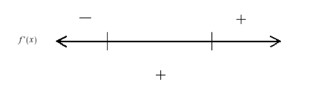
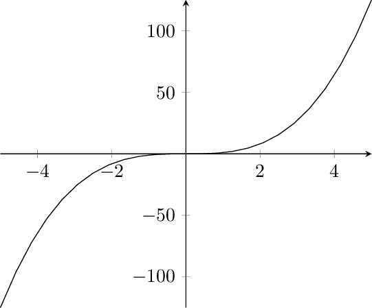

Introduction
-
Dylan
- Using CAS systems to graph is great and all, but on a test where I don’t
have a calculator it’s so hard to sketch a curve!
-
James
- Well maybe we can use derivatives to figure out properties of the graph
so it’s easier to sketch!
-
Dylan
- Oh! We’d be able to see where the graph was heading up or down, plus
we’d be able to see maxima when the derivative at a point is zero!
Guided Problems
Consider the function .
Create a number line, and mark the points where the derivative is zero. Between
these points, mark the sign of the derivative of any point on that interval (You may
do this by hand as it is difficult to format using most CAS systems). An example is
shown below.

On what interval(s) is the slope positive?
On what interval(s) is the slope negative?
Select everything you can predict about the graph of a function at a point where the
derivative is 0:
The graph will be flat at that point. The slope will change from positive to
negative at the point. The slope will change from negative to positive at the
point. The slope will change sign going from one side of the point to the
other.
If the derivative at a point is zero, we can only tell that the graph flattens
out. It is possible that the sign does not change after crossing the point!
-
Julia
- So we have local maxima and minima when the derivative is 0, but what
about the graph of ?

-
Dylan
- Hmmm...I guess that means there are three different kinds of critical
points! Two when the sign changes and one when it stays the same!
-
Julia
- Wait... what’s a critical point?
-
Dylan
- Any point where the derivative is zero or does not exist! Because we
know it’s important, but we have to check to see what it means with our
number line!
-
James
- You guys are still figuring that out? I’m already determining concavity!
-
Dylan and Julia
- Holy cat fur! What’s concavity?!
-
James
- A graph is concave up when its derivative is increasing, and concave
down when its derivative is decreasing. The easiest way to tell is to look
at the curve and think ‘Would this hold water?’ If it would, it’s concave
up, and if not, it’s concave down!
-
Dylan and Julia
- Wow! Thanks James!
Now use your CAS to determine the derivative of the function’s derivative, . Points
where the second derivative is zero are known as inflection points. What happens at
these points?
They show the function is at extrema as well. They indicate that concavity will
remain the same. They indicate that concavity is changing. They show that the
function is at minimum change.
Draw another number line, this time for the second derivative, marking the inflection
points. Evaluate on a point of each of the intervals created through this marking,
and mark the sign. What might this mean in general for changing signs on each side
of an inflection point?
The graph will be flat at that point. The concavity will change from up to down
at the point. The concavity will change from down to up at the point. The slope will change direction going from one side of the point to the
other.
Where is the graph concave up?
What about concave down?
Inflection points are given as ordered pairs. Evaluate each inflection point you found
using to determine the ordered pairs, then select them below.
Based on what you’ve done until now, sketch the graph yourself. When you’re done,
click below to see the graph.
I’m Done! Show me the graph!
Matching Graphs
-
Dylan
- So if I wanted to match a graph with the graphs of its first and second
derivative I can do that now!
-
Julia
- Wait, really?? How?
-
James
- Well the value of corresponds to the slope of , and the value of
corresponds to the slope of and is related to the concavity of .
-
Julia
- So we can match the graphs based on how all that information relates!
-
Dylan
- Exactly, let’s try it!
For the following problems, select the correct match of
On Your Own - Need Answers
Now, consider the function
Without graphing the function, complete the following:
Select each type of extrema present on the graph.
Local Maximum Local
Minimum Global Maximum Global Minimum
Indicate the coordinates of any critical points. List each ordered pair in ascending
-coordinate order, and separate each pair with a comma.
Indicate the coordinates of any inflection points. List each ordered pair in ascending
-coordinate order, and separate each pair with a comma.
Select the intervals on which the function is concave up.
Select the intervals on which the function is concave down.
Now, create a sketch of your function on paper. When you’re done, click below to see
how your graph should look!
I’m done waiting! Show me the graph! I’m not ready yet, but I’m going to click
regardless!
In Summary
In this lab, you’ve covered quite a bit. To help organize everything, we’ve made the
following table for you.
|
|
| First Derivative Test | When :
-
(a)
- A maximum occurs if at this point, the sign
of the derivative changes from positive to
negative.
-
(b)
- A minimum occurs at this point if the sign
of the derivative changes from negative to
positive.
-
(c)
- An inflection point occurs at this point if
the sign of the derivative stays the same.
When does not exist:
-
(a)
- If is in the domain of , follow the same steps
as when
-
(b)
- If is not in the domain, then is not a critical
point.
|
|
|
| Second Derivative Test | If
-
(a)
- A local maximum occurs if .
-
(b)
- A local minimum occurs if .
-
(c)
- The test fails if .
|
|
|
| |